正文开始前，先醒脑。
感谢胡主编提供这么好的案例，感谢贾科长这么机智的案例分析。
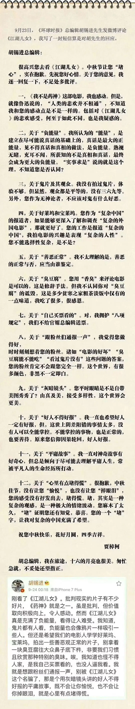
有部分剧透 不喜者慎入
作为山西人，能在大银幕上看着演员飚着家乡话就觉得分为亲切。
电影看下来，就像贾科长自己写剧本时的感受：一言难尽，五味杂陈。
心里会非常堵，堵不是因为电影不好，恰恰因为电影拍出了太多真实的东西，需要慢慢回味。
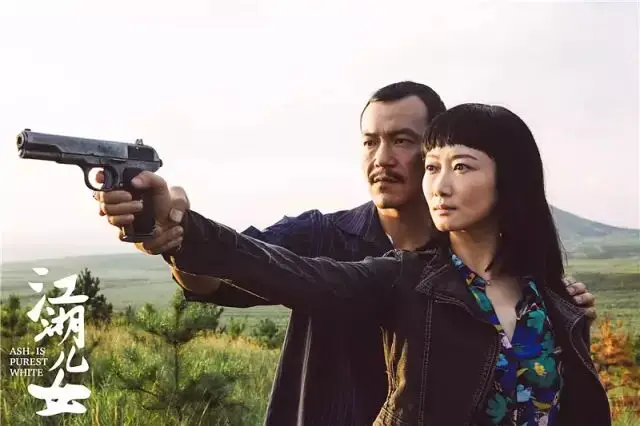
故事发生在2001年的山西大同。
斌哥是当地混的有头有脸的黑帮大哥，他做事干净利落，讲究江湖道义，总有人找他帮忙摆平一些麻烦，因此，也结下不少仇家。
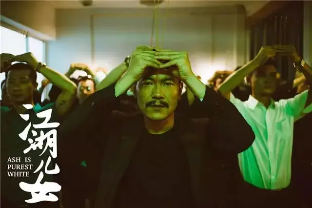
舞娘巧巧是斌哥的女人，在那个年代，巧巧的穿着和言行绝对是别人眼中那种不正经的女人，可是内心里，巧巧却是一个想要寻求安定、建立家庭的女人。
巧巧希望斌哥和她一起去新疆重新开始生活，毕竟，深处江湖的斌哥在大同注定不会太平。
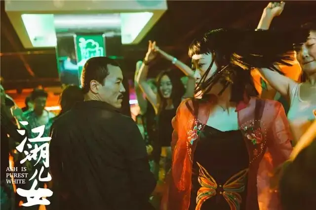
果然，斌哥后来遭到一群愣头青围攻，虽然他身手不凡，但也难挡乱拳和铁锹，斌哥被打的头破血流。
情急之下，巧巧开枪救了斌哥，并因此锒铛入狱，可令她没有想到的是，五年里，斌哥竟一次都没有来看过自己.....
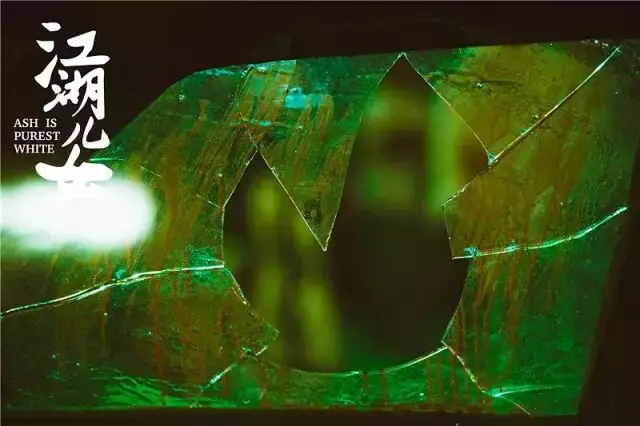
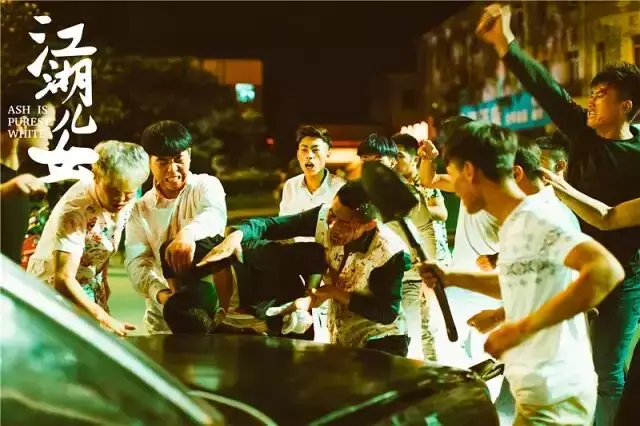
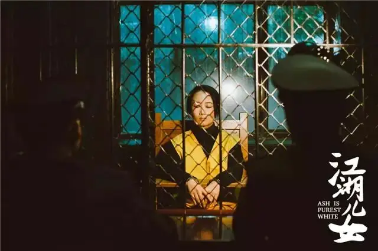
这就是胡总编所说的好人没好报的“负能量”，但却是贾樟柯呕心沥血打造的江湖。
这个江湖中“负能量”无处不在，恩将仇报的小年轻、背信弃义的马仔、坑蒙拐骗的巧巧、出轨偷情的土豪、满嘴谎话的乘客、逆袭失败的斌哥、无果而终的爱情.....
善恶不分明，颓丧到爆炸，这怎么能让我们伟光正的胡大总编吃的消，估计得刷十九遍《战狼》才能恢复元气。
可是贾樟柯的江湖绝对要比环报真实靠谱！
电影依旧延续了贾樟柯一贯的纪实风格。
舞厅、棋牌馆、茶楼、广场、三峡游轮等公共空间搭的非常真实。
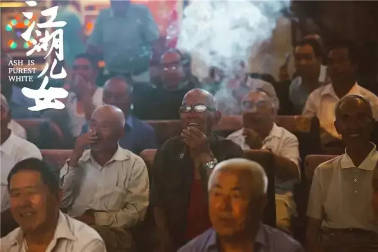
摄影团队为了呈现特定时代的感觉，更是前后使用了掌中宝、胶片、6k高清摄像、dv等六种器材去拍摄。
再加上当时的录像和音乐，蕴藏在特定时代的情感就会被自然唤醒。
所以，贾樟柯的江湖是时间长河里的江湖，在这十八年里，江湖传统情义被践踏丢弃，纯粹感性的情感被冰冷逐利的理性取代。
面对这些变化，斌哥和巧巧成为了时空之下悲剧的囚徒。
电影第一个段落中，斌哥是《英雄本色》里的被小弟背叛的豪哥，是《喋血双雄》中的被新时代丢弃的小庄和李警官。
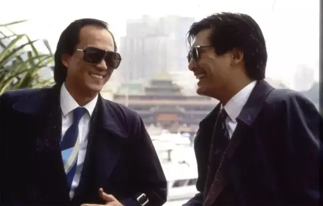
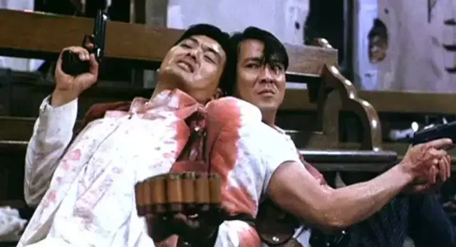
当有人欠钱耍皮赖账，斌哥便让他在关二爷面前把事情说清楚，那人便立马低头认错。
这就是江湖的规则，有情有义并心存敬畏。
可是这个江湖秩序却被一群只想出头的年轻人挑战，他们无视规则和道义，可以趁你喝醉时将你毙命，也可以冷不丁地冲出来将你撂倒。
这一部分看的我心惊胆战，这种紧张感很像我看《江湖告急》的感觉，不管你是如何厉害的人物，不论你有多大的威望，你总躲不过背后的暗箭，拼不过初生的牛犊。
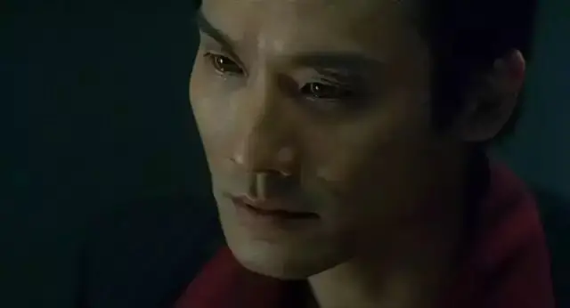
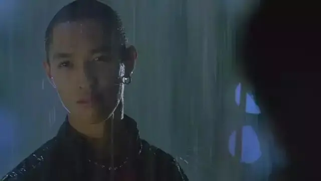
当斌哥第一次被袭击后，他看着《喋血双雄》，听着叶倩文的《浅醉一生》神色黯然、感慨无限，像一个落寞的剑客，仿佛一个时代即将结束。
此情此景令人不禁想起《喋血双雄》中小庄的那句经典台词：这个江湖已经不再适合我们了，我们都太念旧。
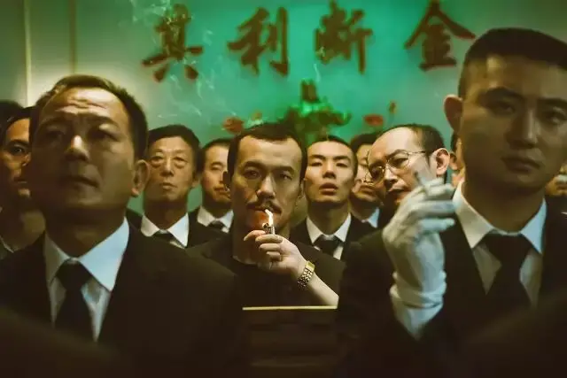
后来斌哥的时代的确被年轻人“结束了”。
斌哥出狱时，没有一个马仔来接他，曾经的小弟现在混得风生水起，早已把这个曾经的仗义大哥忘得一干二净。
所以斌哥变成了卧薪尝胆的小马哥，他远走他乡、暗下狠劲，发誓一定要拿回自己曾经失去的一切，要在众人的呐喊和掌声里重返故里。
在没有逆袭成功之前，他绝不会以现在一副窝囊样去见巧巧。
可惜他不是小马哥，这里也不是可以肆意火拼的香港，斌哥最终成为了坐在轮椅上被人嘲笑的废物。
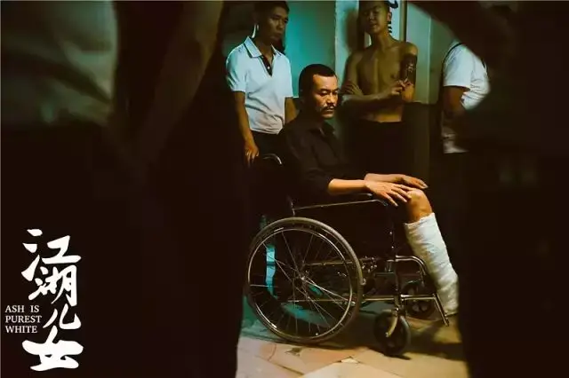
要诠释好这个角色极富挑战，真心佩服廖凡的敬业以及精湛的演技，他是长沙人，光是为了练山西方言就花了几个月，最后以至于我都难辨真假。
做老大时的酷、落魄后的忍、满脸胡渣的颓都被廖凡精准地捕捉到了。
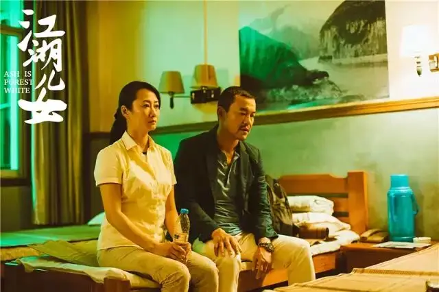
除了斌哥，巧巧作为一个女人，她的变化更加耐人寻味。
三个段落中，她从刚开始对斌哥的有情、不懂江湖的无义变成了为斌哥蹲牢的有情、不出卖朋友的有义，最终又蜕变为对斌哥的无情但收留他的有义。
简单来说，巧巧变成了江湖里的女强人。
这个变化对于一个女人来说是痛苦的，因为变成一个女强人就意味着对感情的彻底绝望。
电影对于巧巧的变化下了很多功夫，除了剧情上的铺垫，化妆、摄影、光线都非常讲究，竭力去呈现巧巧身上的变化。
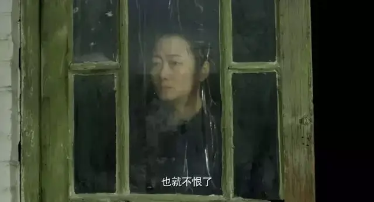
赵涛的表演也非常给力，她的嗓音从尖细逐渐变得厚重，神态也从青涩傲娇逐渐变得抑压麻木。
电影中对于巧巧断情的场景让人印象深刻，当她失魂落魄地离开三峡时，在火车上她遇到了徐峥扮演的乘客。
他满嘴谎话，告诉巧巧他曾见过ufo，并说人类是宇宙的囚徒。
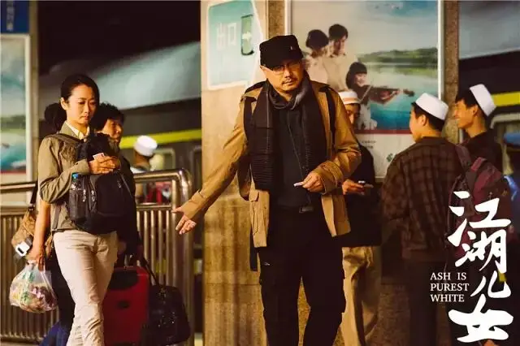
后来电影中真的出现了ufo，当巧巧在夜空中看着飞碟呼啸而过的时候，她感受到人类的渺小和彻底的孤独，她真的接受了自己是宇宙囚徒的想法。
既然是囚徒，那就不要再渴望幸福，没有了盼望，那也就没有了感情。
这种超现实的表达方式也算是贾樟柯电影的一种突破。
因此，这部电影比起贾樟柯以往的作品，残酷写实之上多了份写意和情怀。
童年记忆、港片情怀、对社会的观察以及自己的成长蜕变都被贾樟柯镌刻在“时间的江湖”中了。
光是看着一个普通人二十年来的变化就很让人动容，更不用说浪漫残酷、满是故事的江湖。
所以，这部电影包含的东西很多，既有时代变革的无奈，也有人物命运的无常，具有很大的感染力，看完后五味杂陈。
某种程度上本片也给大陆黑帮片创立了一个可行的范式。
因此，比起电影中文名《江湖儿女》的浪漫古意，英文名字可能更加贴近主旨：Ash is Purest White。
直译过来叫做灰烬是最洁白的。
这个名字是来自电影刚开始的一个场景，当巧巧和斌哥看着大同的火山群时，说“火山灰是最干净的，因为经过了高温的燃烧”。
贾樟柯表示当他写下这句台词的时候，心里非常感动，“我们每个人来这个世界走一遭，可能真的就是炮灰，就烟消云散了，但人再有毛病，也是珍贵的”。
因此，看着不可一世的斌哥最终坐在轮椅上、渴望幸福的巧巧最后孑然一身的时候，我们既感伤又震撼。
我们无法也不应该以成败论他们，敢行走在时间长河里经受幻灭本身就极富尊严。
西西弗斯推上去的石头虽然一定会砸下来，但西西弗斯值得我们尊重。
我们不可以因为手握真理就蔑视他们的挣扎，这是极其傲慢的，而应该为他们谦卑祷告。
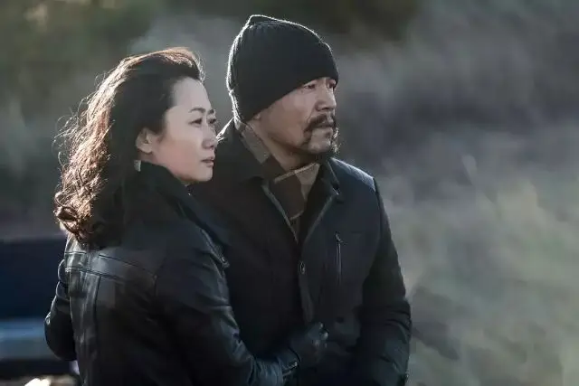
关于“时间的江湖”是不是很熟悉。
如果你是六百击的常客，你会发现此前大虾介绍过一部类似的作品，就是王家卫的《东邪西毒》（点击篮字跳转文章）。
两部电影虽然风格迥异，但是有些地方很像，都是作者化的江湖，都是时间里的爱恨故事。
而且英文名字也很像，一个叫《Ashes of Time》，一个叫《Ash is Purest White》。
是巧合么
绝对不是，成为一个悲观主义者绝对是所有人文艺术家的最后归宿。
贾樟柯写实，用镜头记录着边缘人和中国城市的变化，王家卫写意，用镜头记录者擦肩而过的爱情和城市里的疏离。
他们的电影具有极大的艺术感染力，他们从环境入手，最后以人为本，作品中充满着残酷的真实和悲悯的情感。
但以人为本虽能产生巨大的共鸣，却怎么会有出路，那一言难尽的苦涩、那痛彻心扉的孤独、那无法避免的苦难和死亡，他们又该如何面对。
因此，王家卫成为了一个存在主义者，重要的不是永远，而是我能抓住的那一刻，重要的是我和你曾经是一分钟的朋友。
而贾樟柯则成为了宇宙的奴隶，接受悲观的现实，然后做自己力所能及的事。
对于过去的遗憾和痛苦，王家卫和贾樟柯都将它们放在时间之上，并将时间仪式化变成永难忘记的记忆。
既然不能再拥有，那就令自己不要忘记。
这是作为人可以做出的“最阳光”的选择，也是自我救赎的极限。
但是依旧没有出路。
就是希腊人“以人为本”地追问自己是谁、从哪里来、要到哪里去本身也是一件很荒谬的事情。
你不是真理的拥有者，你又怎么能做真理的判断者。
所以希腊人最后得出的答案是我不知道我是谁。
因此，人本主义是一条令人尊敬但又无比遗憾的绝路，人应该先问这个世界是否存在上帝、上帝是谁，才有可能关照出人的奥秘。
当贾樟柯和王家卫将人性看的这么清楚、走在希望尽头的时候，向上仰望会让他们的作品发生质的飞跃。

这里没有挑逗你眼目情欲的小鲜肉
也没有挑动你肉体情欲的段子
更没有膨胀你今生骄傲的鸡血
我们只在乎那些最质朴真诚的作品
在那里我们才能恢复真正的想象力
我们也坚信这才是我们真正需要的

ID:Six_hundred_hits
长按二维码，一键关注
【六百击】
-END-
电影评论
尽情分享朋友圈

苹果打赏通道
小提示：文末广告是腾讯配送广告，内容与本号无关，但您的每次点击（无需反复点）都会给平台带来几毛收益，欢迎您点击支持六百击。